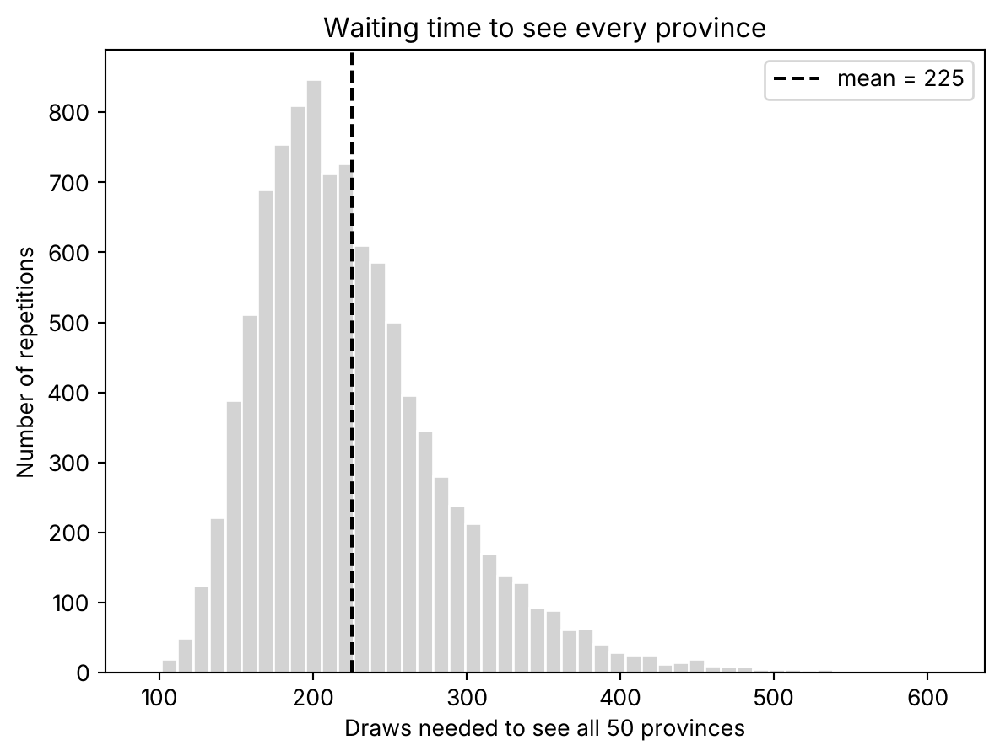

import numpy as np
import matplotlib.pyplot as plt
rng = np.random.default_rng(2026)
n = 50 # number of provinces
reps = 10_000 # repetitions of each experimentTo see every one of 50 provinces in a random sample, you need about 225 draws, not 50
probability
sampling
simulation
python
Draw 50 times from 50 options and you see about 32 of them. Waiting for the last one takes 225 draws, and one rare category can double that.
You draw 50 provinces at random from a list of 50. You’d expect to have seen every one.
You’ve seen about 32.
Nothing is wrong with the draw. Each province had the same chance every time. The surprise is in how the last few arrive.
Why 50 draws is not enough
Draw with replacement, so a province can come up twice. After 50 draws, a given province has been missed with probability \((49/50)^{50}\), about 0.36.
Multiply by 50 provinces and you get the expected number of missing ones. The expected number you’ve seen is
\[50\left(1 - \left(\tfrac{49}{50}\right)^{50}\right) \approx 31.8\]
In words: every province has a 36% chance of not showing up, and there are 50 of them. A third of your list is missing, and that’s what normally happens.
I’d rather check that before going on. The code repeats the 50 draws ten thousand times and counts the distinct provinces each time.
def distinct_in_n_draws(rng, n):
"""Draw n provinces with replacement and count the distinct ones."""
return len(np.unique(rng.integers(0, n, size=n)))
distinct = np.array([distinct_in_n_draws(rng, n) for _ in range(reps)])
expected = n * (1 - (1 - 1 / n) ** n)
print(f"simulated mean distinct = {distinct.mean():.2f}, formula = {expected:.2f}")
print(f"all 50 seen: {(distinct == n).sum()} of {reps}")simulated mean distinct = 31.78, formula = 31.79
all 50 seen: 0 of 10000The simulation says 31.78 and the formula says 31.79. In ten thousand tries, not once did the 50 draws cover the 50 provinces.
That’s no surprise once you write it down. The chance is \(50!/50^{50}\), about \(3 \times 10^{-21}\). You will not see it.
How long until the last one
Now the question you actually had. How many draws until every province has appeared at least once?
Think of it in stages. At the start, any draw is new. When you hold \(k\) provinces, a new one arrives with probability \((50-k)/50\), so you wait on average \(50/(50-k)\) draws for it.
When only one province is missing, you wait 50 draws for that single one. The last stage alone costs as much as the whole first attempt.
Add the stages up and the total is
\[50 \cdot H_{50}, \qquad H_{50} = 1 + \tfrac12 + \tfrac13 + \dots + \tfrac1{50}\]
\(H_{50}\) is the harmonic number, and it grows like \(\ln 50\) plus a constant of 0.58. For \(n\) provinces the wait is about \(n(\ln n + 0.58)\), and that’s why you need many more draws than provinces. The code computes the exact value and its standard deviation.
k = np.arange(1, n + 1)
mean_theory = n * np.sum(1 / k)
sd_theory = np.sqrt(n**2 * np.sum(1 / k**2) - mean_theory)
print(f"H_50 = {np.sum(1/k):.4f}")
print(f"mean = {mean_theory:.2f}, sd = {sd_theory:.2f}")H_50 = 4.4992
mean = 224.96, sd = 61.95The mean is 224.96. The standard deviation is 61.95, so the wait is far from fixed. Now the simulation.
def draws_until_complete(rng, n, max_draws=3000):
"""Number of draws until every one of the n provinces has appeared."""
draws = rng.integers(0, n, size=max_draws)
_, first_seen = np.unique(draws, return_index=True)
assert len(first_seen) == n # missing one in 3000 draws has probability ~1e-25
return first_seen.max() + 1
waits = np.array([draws_until_complete(rng, n) for _ in range(reps)])
print(f"mean = {waits.mean():.2f}, sd = {waits.std(ddof=1):.2f}")
print(f"median = {np.median(waits):.0f}, p95 = {np.percentile(waits, 95):.0f}, max = {waits.max()}")mean = 225.10, sd = 62.82
median = 214, p95 = 344, max = 611Mean 225.10, standard deviation 62.82. Theory and simulation agree.
Look at the other numbers. The median is 214 and the 95th percentile is 344. The longest run in the ten thousand needed 611 draws.
fig, ax = plt.subplots()
ax.hist(waits, bins=50, color="lightgray", edgecolor="white")
ax.axvline(waits.mean(), color="black", linestyle="--", label=f"mean = {waits.mean():.0f}")
ax.set_xlabel("Draws needed to see all 50 provinces")
ax.set_ylabel("Number of repetitions")
ax.set_title("Waiting time to see every province")
ax.legend()
plt.show()
The histogram leans to the right. Most runs finish before the mean, and a few take much longer. Half your runs need more than 214 draws, and one in twenty needs more than 344. Plan for 225 and you’ll come up short almost half the time. Plan for 344 and you’re covered nineteen times out of twenty.
When one province is rare
So far all 50 provinces were equally likely. Real lists aren’t like that.
Change one thing. One province has 0.2% of the population, and the other 49 share the remaining 99.8% equally. You sample in proportion to population.
p_rare = 0.002
p = np.full(n, (1 - p_rare) / (n - 1)) # 49 provinces share 99.8% equally
p[0] = p_rare # one rare province
cdf = np.cumsum(p)
cdf[-1] = 1.0
def wait_unequal(rng, cdf, max_draws=12_000):
"""Draws until every province appears, with unequal probabilities."""
draws = np.searchsorted(cdf, rng.random(max_draws))
_, first_seen = np.unique(draws, return_index=True)
assert len(first_seen) == len(cdf) # rare province missing in 12,000 draws: ~e^-24
return first_seen.max() + 1
waits_u = np.array([wait_unequal(rng, cdf) for _ in range(reps)])
print(f"mean = {waits_u.mean():.1f}, sd = {waits_u.std(ddof=1):.1f}")
print(f"p95 = {np.percentile(waits_u, 95):.0f}")mean = 545.9, sd = 465.4
p95 = 1473The mean goes from 225 to about 546. The standard deviation goes from 62 to 465. The 95th percentile is 1,473 draws.
One province, with a share you’d round to nothing, multiplies the wait by 2.4.
I don’t trust a simulation alone for a number like that, so here is the exact value. By inclusion–exclusion, the expected wait is a sum over every subset of provinces. The exact fractions avoid rounding errors in an alternating sum.
from fractions import Fraction
from math import comb
q, r = Fraction(998, 1000) / 49, Fraction(2, 1000) # common and rare probabilities
exact = Fraction(0)
for j in range(50): # j common provinces in the subset
for has_rare in (0, 1):
size = j + has_rare
if size:
exact += (-1) ** (size + 1) * comb(49, j) / (j * q + has_rare * r)
print(f"exact mean = {float(exact):.2f}")
print(f"rare province alone = {1 / p_rare:.0f} draws")exact mean = 544.41
rare province alone = 500 drawsThe exact mean is 544.41. The simulation gave 545.9, with a standard error of 4.7, so they match.
The rare province alone takes 500 draws on average, because you see it once every 500 draws. That’s 92% of the total. The other 49 are usually done long before.
Don’t add 500 and 225 to get the total. The two waits run at the same time, so the total is only a bit more than the larger one.
Why this matters to you
You sample customers, stores or provinces, and you need every group to show up at least once. For \(n\) equal groups, that takes about \(n(\ln n + 0.58)\) draws. And the tail goes well beyond that.
If the groups are uneven, the rarest one decides. Take its share \(p\), and expect \(1/p\) draws for that group alone. For a group at 0.2%, that’s 500, whatever the other 49 do.
The duplicate IDs post asked the opposite question: how long until the first repeat. This one asked how long until the last new one.
You can avoid the wait. If every group must appear, sample each group on purpose (stratified sampling) and give up on pure chance. It’s cheaper than drawing 546 to catch one rare province.